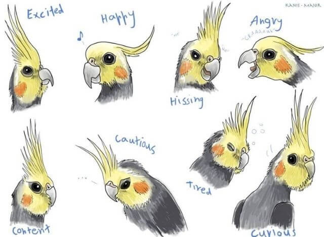

Cockatiels are small sized birds of the cockatoo family. They come in different variations of grey, white and yellow colours, and have a lifespan of up to 20 years. They are native to semi-arid regions of Australia but are one of the top pet birds in the world.
Cockatiels are also talented whistlers, and male cockatiels in particular are known for their whistle serenades, which can be directed at their favored person, their favorite object or their mirror reflection.
There are at least 18 different types of cockatiels. Their colors are the main feature that sets them apart from one another. The most common type of cockatiel is called the ‘normal grey’. But some types are very rare and highly prized indeed.
scroll down for personality and behaviours!
Personality
These little birds are gentle, affectionate, and often like to be petted and held. They simply want to be near you and will be very happy to see you. Cockatiels like to imitate whistles and sounds rather than speech and male cockatiels often whistle when they are happy. Cockatiels are generally friendly; however, an untamed bird might nip.
General Behaviour
The position of a cockatiel’s crest feathers can tell you its mood.Straight-up crest feathers can mean the bird is startled or highly curious.
A defensive cockatiel will hold its crest feathers flattened close its head,
and it might be especially stressed if it also hisses.
A relaxed cockatiel will have slightly held back crest feathers,
as well as fluffed cheek feathers and you might also hear it
contentedly grinding its beak.
